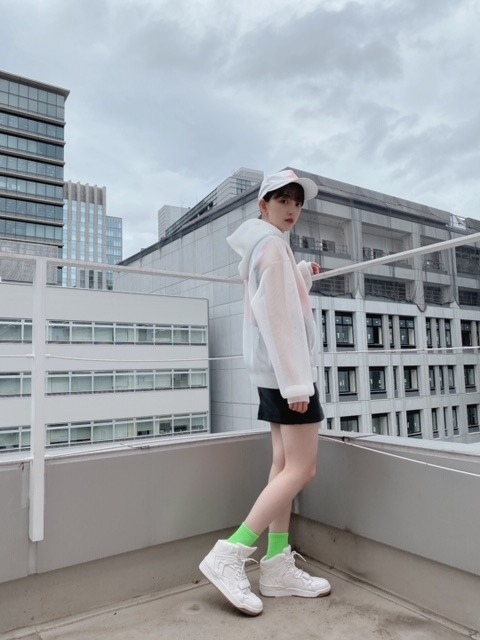
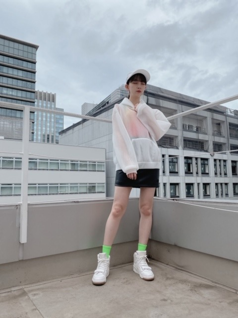
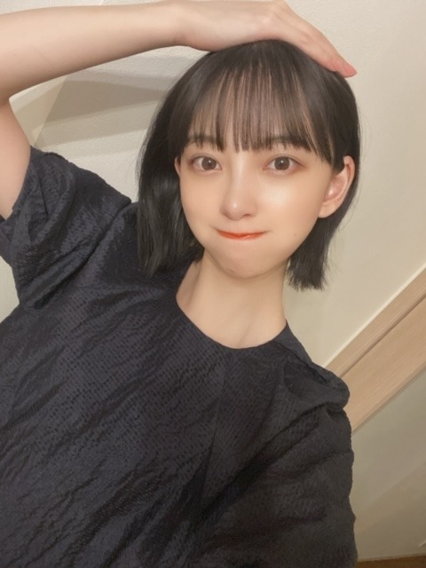
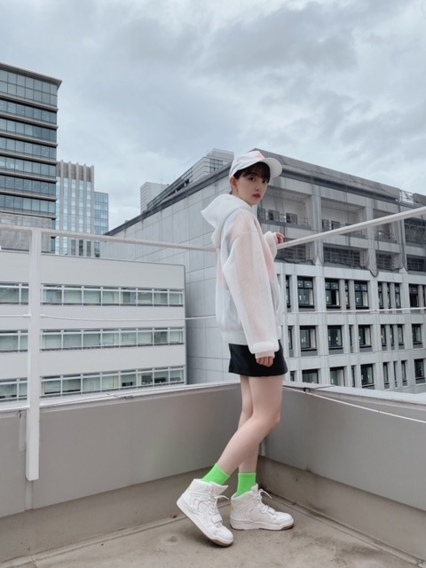
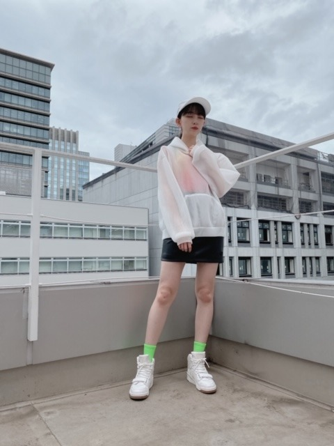
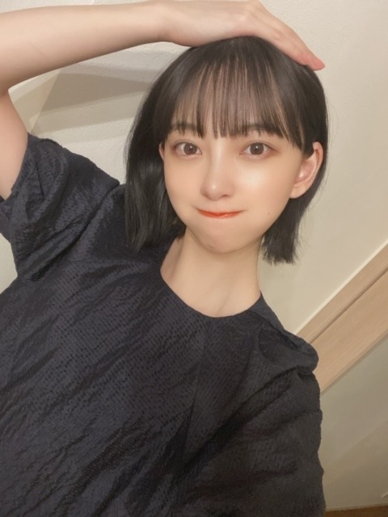

2020/0802Sunやさいのひ
梅雨明けましたね！
Route 246 のMV
オフショット載せます
まだ質問返しはまとめてるのでお待ちを！


写真で目瞑りがち
こういうスポーティーなかんじも
時々着たくなります^ - ^
どうですか？
結構ガーリーな服を着てるイメージを
持たれますがデニムとかパーカーとか
ゴツいアクセサリーとかメンズサイズの古着とか
ストリート系などもすき
髪がショートだからそういう服のほうが
しっくりくる日もありますね^ - ^
スニーカーいま集めてるんだけど
おすすめのスニーカーブランドあったら
教えてください^ - ^

生誕Tシャツどんなんにしよー...
悩みます...
こんなのがいい！とかありますか？
参考がてらお聞かせください！
ではは
梅雨明けましたね！
Route 246 のMV
オフショット載せます
まだ質問返しはまとめてるのでお待ちを！


写真で目瞑りがち
こういうスポーティーなかんじも
時々着たくなります^ - ^
どうですか？
結構ガーリーな服を着てるイメージを
持たれますがデニムとかパーカーとか
ゴツいアクセサリーとかメンズサイズの古着とか
ストリート系などもすき
髪がショートだからそういう服のほうが
しっくりくる日もありますね^ - ^
スニーカーいま集めてるんだけど
おすすめのスニーカーブランドあったら
教えてください^ - ^

生誕Tシャツどんなんにしよー...
悩みます...
こんなのがいい！とかありますか？
参考がてらお聞かせください！
ではは
2020/08/02 20:54
コメント(328)
オニツカタイガーのスニーカーオススメです！
Route 246、好評で何よりです！
これは乃木坂46の代表曲になるかもですね！
早くMVのフルバージョンが観たいですね♪☆
これは乃木坂46の代表曲になるかもですね！
早くMVのフルバージョンが観たいですね♪☆
CDTV頑張ってね！！
生誕Tシャツにスニーカーデザインを入れたり、未央奈ちゃんの個性を活かしたデザインはどうですか？
自分は、ニューバランス、CONVERSE、アディダス、スゴく軽くてファッションにも合うので、オススメします。
自分は、ニューバランス、CONVERSE、アディダス、スゴく軽くてファッションにも合うので、オススメします。
黒とかダークカラーが欲しいな
結局着やすいから思いもホントに深まる
黒地にベタ白抜きワードでもいいかも
結局着やすいから思いもホントに深まる
黒地にベタ白抜きワードでもいいかも
思いついた一つの#みおなさんへ質問
みおなさんは朝ドラマ観たことありましたか。
朝ドラマのあまちゃんもアイドルのことに触れる物語でした。観たことありましたか。
私は個人的にあまちゃんが大好きで、乃木坂さんを知る前に、ドラマによって日本のアイドルのこと少々認識してた。もしいつかみおなさんが朝ドラマに出たら絶対観ます。
乃木中でみおなさんの勇姿観たんですよ、容赦なくバナナマンさんを全力で打ち負かす姿 笑。
競走の時に両足もゲーム画面の走者とともにバタバタしてた様子かわいかったよ。
ちなみに、山下さんの負けないぞって言った時に後ろに吹き出したことがあって、もしかしたらみおなさんが山に教えたのですか。違うならごめんなさいね。そして一年も高山さんの生態観察してすごいなあぁ 笑
みおなさんは朝ドラマ観たことありましたか。
朝ドラマのあまちゃんもアイドルのことに触れる物語でした。観たことありましたか。
私は個人的にあまちゃんが大好きで、乃木坂さんを知る前に、ドラマによって日本のアイドルのこと少々認識してた。もしいつかみおなさんが朝ドラマに出たら絶対観ます。
乃木中でみおなさんの勇姿観たんですよ、容赦なくバナナマンさんを全力で打ち負かす姿 笑。
競走の時に両足もゲーム画面の走者とともにバタバタしてた様子かわいかったよ。
ちなみに、山下さんの負けないぞって言った時に後ろに吹き出したことがあって、もしかしたらみおなさんが山に教えたのですか。違うならごめんなさいね。そして一年も高山さんの生態観察してすごいなあぁ 笑
みおなちゃん更新ありがとう╰(*´︶`*)╯♡
オフショットもありがと〜
スポーティーな感じも良きですなぁ（╹◡╹）♡
おすすめというか自分はほぼconverseしか履かないかな〜
デザインが可愛かったりカッコよくて好きだからね(๑>◡<๑)
生誕Tシャツ楽しみ！
ここはみおな画伯の渾身の絵を期待します笑
梅雨も明けて本格的な夏が到来するから熱中症など体調には気を付けてね＼＼\\٩( 'ω' )و //／／
オフショットもありがと〜
スポーティーな感じも良きですなぁ（╹◡╹）♡
おすすめというか自分はほぼconverseしか履かないかな〜
デザインが可愛かったりカッコよくて好きだからね(๑>◡<๑)
生誕Tシャツ楽しみ！
ここはみおな画伯の渾身の絵を期待します笑
梅雨も明けて本格的な夏が到来するから熱中症など体調には気を付けてね＼＼\\٩( 'ω' )و //／／
未央奈～、こんばんわ！昨日の乃木中大活躍やったねぇ リモート放送回からしばらく未央奈出てなかったから良かったぁ
リモート放送回からしばらく未央奈出てなかったから良かったぁ さすがゲーム大好きな未央奈だけあって日村さんに完勝やったね！足をばたばたさせながら真剣な顔してボタン連打してる未央奈がめっちゃ面白かったよ
さすがゲーム大好きな未央奈だけあって日村さんに完勝やったね！足をばたばたさせながら真剣な顔してボタン連打してる未央奈がめっちゃ面白かったよ 大好き
大好き
生誕Tシャツ、未央奈が何かイラスト描いてくれたら嬉しいかなぁどうやろぉ～？？
生誕Tシャツ、未央奈が何かイラスト描いてくれたら嬉しいかなぁ
堀さんは、白が似合いますね、スポーティな服もバッチリ決まってて、カッコイイです。ヘイヘイヘイの堀さんのトークは、間の使い方が、とても上手くて、ウケを狙わない自然な感じが、品があって、さらに、おもしろかったです。生誕ｔシャツは、浅田のｔシャツみたいなのでは、どうですか、浅田おぼえてますか、京都と大阪の握手会で、参加してました。おぼえてるわけないですよね、すいませんでした。歌番組で見る、堀さんのダンスはクールで、カッコイイです。あと、屋上の景色と、堀さんの立ち姿も決まってますね、
コメント遅くなってごめんね。
ブログ更新ありがとう！最近暑くなってきたし、お互い体調に気を付けて頑張ろう！！次も絶対見るからね！
ブログ更新ありがとう！最近暑くなってきたし、お互い体調に気を付けて頑張ろう！！次も絶対見るからね！
未央奈～！
ＣＤＴＶライブ！ライブ！
リアルタイムで観ましたよ～☺️
フルサイズ始めて観れたし、本当に良かったです！！
未央奈もしっかり見つけたよ～！
録画もしてあるので、何度も観ます☺️
Route 246 本当に好きだわ…❤️
髪型はストレートだったね！
可愛かったよ♪
ＣＤＴＶライブ！ライブ！
リアルタイムで観ましたよ～☺️
フルサイズ始めて観れたし、本当に良かったです！！
未央奈もしっかり見つけたよ～！
録画もしてあるので、何度も観ます☺️
Route 246 本当に好きだわ…❤️
髪型はストレートだったね！
可愛かったよ♪
#堀未央奈への質問
堀さんは普段アニメは見ますか？
また、好きな作品があったら教えて欲しいです。
よろしくお願いします。
堀さんは普段アニメは見ますか？
また、好きな作品があったら教えて欲しいです。
よろしくお願いします。
未央奈ブログ更新ありがとう！
コメント遅れてゴメン
質問返し楽しみ〜！
生誕Tも待ち遠しい！
これからも応援してるよ！
体調には気をつけてね！
by未央奈推しのブラックコーヒー
コメント遅れてゴメン
質問返し楽しみ〜！
生誕Tも待ち遠しい！
これからも応援してるよ！
体調には気をつけてね！
by未央奈推しのブラックコーヒー
みおな
今日もお疲れ様です
やっと梅雨明けしましたね
暑いけど、やっぱり晴れはいいですね
ワンピースとか花柄のお洒落なやつとかガーリーなのも好きだけど、スニーカーとか、Tシャツとかボーイッシュな格好も好きです
スニーカーはナイキを好んでよく履きます
オレンジのナイキマークが入ったエアフォース1がカッコよくてお気に入りです
俺は女の子は可愛いよりも、カッコいい事を重視します
ちなみにみおなは我が道を行く感じでカッコイイです
CD TVもリアタイしたよ
ROUTE 246何回も聴いてます
今回の曲はカッコいいからかなり気に入りました
生誕Tシャツのデザインは、みおなの下手…じゃなくて芸術的な動物の絵か自分の似顔絵にしたらどうかな？（アメトークの時みたいな）
シャツの色はパステルブルーで、後ろは何もなくて、前に絵を載せる感じで
シンプルなデザインの中で、みおなの絵があれば味が出るかもしれませんね
来月の発売楽しみにしてます
またコメントします
ありがとうございました
今日もお疲れ様です
やっと梅雨明けしましたね
暑いけど、やっぱり晴れはいいですね
ワンピースとか花柄のお洒落なやつとかガーリーなのも好きだけど、スニーカーとか、Tシャツとかボーイッシュな格好も好きです
スニーカーはナイキを好んでよく履きます
オレンジのナイキマークが入ったエアフォース1がカッコよくてお気に入りです
俺は女の子は可愛いよりも、カッコいい事を重視します
ちなみにみおなは我が道を行く感じでカッコイイです
CD TVもリアタイしたよ
ROUTE 246何回も聴いてます
今回の曲はカッコいいからかなり気に入りました
生誕Tシャツのデザインは、みおなの下手…じゃなくて芸術的な動物の絵か自分の似顔絵にしたらどうかな？（アメトークの時みたいな）
シャツの色はパステルブルーで、後ろは何もなくて、前に絵を載せる感じで
シンプルなデザインの中で、みおなの絵があれば味が出るかもしれませんね
来月の発売楽しみにしてます
またコメントします
ありがとうございました
生誕Tシャツは、普段着でも着れる感じがいいなぁ！未央奈ちゃんの顔入りがいい！！おしゃれなかんじの！！おすすめのスニーカーはスケッチャーズかな！厚底スニーカー今履いてる！！
ももんが
ももんが
どんなファッションも似合うね！！
生誕のTシャツは
シンプルなのがいいな☺️
未央奈はシンプルなのは好き？？
生誕のTシャツは
シンプルなのがいいな☺️
未央奈はシンプルなのは好き？？
ブログ更新ありがとー！
未央奈の生誕Tシャツは変顔してる未央奈の顔写ってるのがいいな！笑
質問
夜中にどーしてもお腹空いておやつが食べたい時、我慢する方法あれば教えてください！笑
未央奈の生誕Tシャツは変顔してる未央奈の顔写ってるのがいいな！笑
質問
夜中にどーしてもお腹空いておやつが食べたい時、我慢する方法あれば教えてください！笑
未央奈お疲れ様(*´∀｀)ノ乃木中ゲームでの勝負良かったよ～幅跳び、ハードル、短距離走勝ったねさすが元陸上部だねその場での駆け足良かったよ～ナイス未央奈(о´∀`о)
堀さん、こんばんは。
裏庭のガレージで抱きしめて聞きましたよ。確かにロミオとジュリエット感ありますね。松田聖子さんだとそれこそ小室哲哉さん作曲のKimono Beatも良いですよね。
それでCDTV見ました。髪型はホットギミックみたいでしたね。フルサイズでたっぷり見れて良かったです。
明らかに小室さんの曲なのに見てると明らかに乃木坂らしさが有るのが不思議でした。手脚の美しさが際立つ振り付けとかなのか分かりませんけど、パフォーマンスにおけるグループの個性ってのが確立されてるんですね。
あと曲前の小室さんの「コンセプトは友情」って言葉で、「創作をまた始める人に対して小室さんが書くだろう歌詞」を秋元さんが書いたのかなって思いました。特定の人への想いから曲を創る事とその曲が誰かの最大の理解者になって背中を押す事を小室さんに両方体験させるために創られたのかななんて思いながら見てました。想像力を自身の為じゃなく特定の人の為に使って大勢を感動させてた”劇場”の主人公をなんだか思い出しました。
裏庭のガレージで抱きしめて聞きましたよ。確かにロミオとジュリエット感ありますね。松田聖子さんだとそれこそ小室哲哉さん作曲のKimono Beatも良いですよね。
それでCDTV見ました。髪型はホットギミックみたいでしたね。フルサイズでたっぷり見れて良かったです。
明らかに小室さんの曲なのに見てると明らかに乃木坂らしさが有るのが不思議でした。手脚の美しさが際立つ振り付けとかなのか分かりませんけど、パフォーマンスにおけるグループの個性ってのが確立されてるんですね。
あと曲前の小室さんの「コンセプトは友情」って言葉で、「創作をまた始める人に対して小室さんが書くだろう歌詞」を秋元さんが書いたのかなって思いました。特定の人への想いから曲を創る事とその曲が誰かの最大の理解者になって背中を押す事を小室さんに両方体験させるために創られたのかななんて思いながら見てました。想像力を自身の為じゃなく特定の人の為に使って大勢を感動させてた”劇場”の主人公をなんだか思い出しました。
みおなちゃん
いつもブログ、モバメありがとう(*^^*)
生誕Tシャツについて。
色はチャコールグレー、ロゴっぽい感じで名前が入ってるとと、お洒落でいいなぁと思います♪
いつもブログ、モバメありがとう(*^^*)
生誕Tシャツについて。
色はチャコールグレー、ロゴっぽい感じで名前が入ってるとと、お洒落でいいなぁと思います♪
未央奈ちゃんこんにちは!
各地で梅雨明けが発表されて日本列島に本格的な夏がやって参りましたね!
暫く暑い日が続きますんで呉々も熱中症には十分気を付けてお過ごし下さい!
かっこいい
1. スニーカーはnew balanceがいいかな？(好みにもよりますが…) 2. Tシャツはすごくポップでラブリーなアマビエをモチーフにしたデザイン。質問 : ホラー映画のあるある教えてください！例えば…ガソリンスタンドの店員さんに道を聞いたら…そこへは行かない方がいいよと言われる// だいたい学生男女5人くらい// 携帯電話が圏外で繋がらなくて助けを呼べない// 車のエンジンがかかりにくいが結局はかかって助かるけど逃げても追いつかれてしまう// この季節は怖いけどみたくなりますね〜ではは
このスポーティーな服はインナーが透けてるんですか？
それともそういう柄かしら。
スポーティーなのに女性らしくもあり。
面白いですね。
それともそういう柄かしら。
スポーティーなのに女性らしくもあり。
面白いですね。
pradaのスニーカーおすすめです。
ブログ更新ありがとう
未央奈かわいい
未央奈かわいい
未央奈ちゃんこんばんは！ありがとうございます‼楽しみにしてます‼頑張ります‼気をつけて下さい！ありがとうございます


Tシャツには、アマビエと悪霊を追払う桃でどうでしょう。おじいちゃんおばあちゃんによろこばれそう。ゾンビも退散しそうですね。ホラーからも護ってくれそう。激しいアクションやスタントでも守ってくれそうですが……だめか。